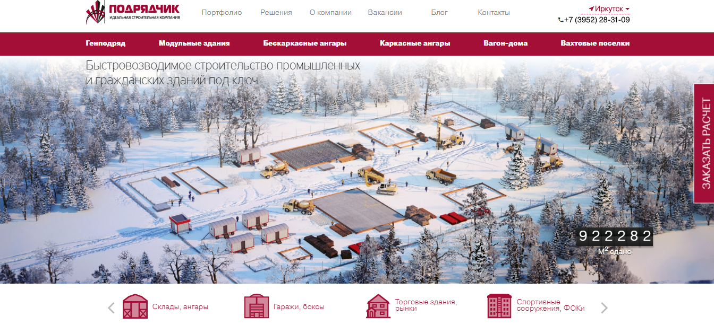
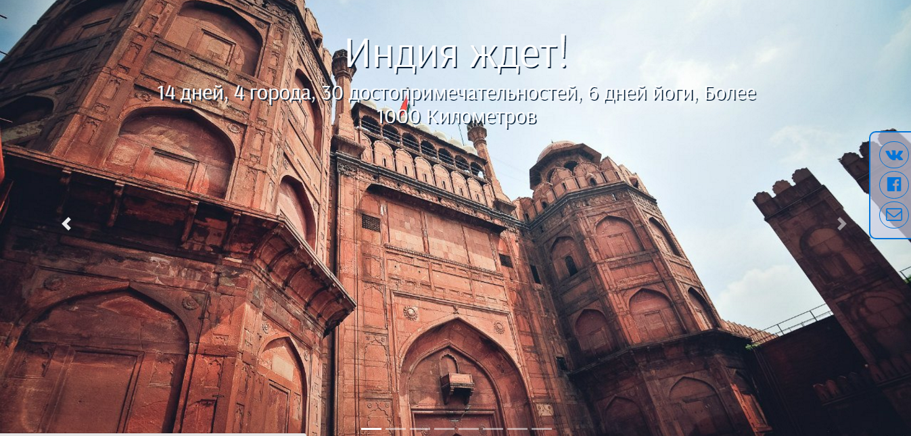
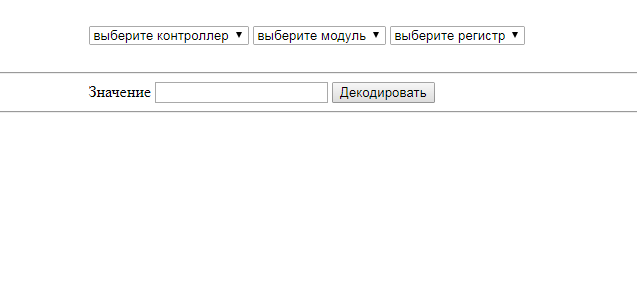
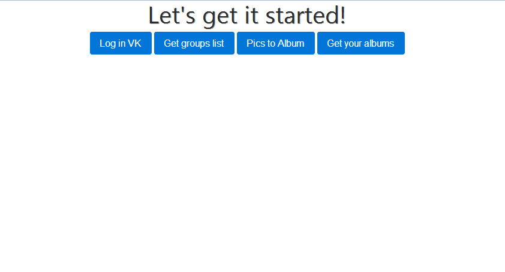

Верстка типовых страниц для нового сайта строительной компании
 код на GitHubЛэндинг йога тура
 открытьПарсер кодов ответов при настройке процессора i.MX53RM
 никакого дизайна чистый ECMAScript и побитовые операцииИнструмент для работы с ВК
 В процессе оказалось, что audio API прикрыт, а возможность редактирования контента(в частности - удаление и загрузка фото) ограничена для standalone приложений. Интерес к проекту увял.